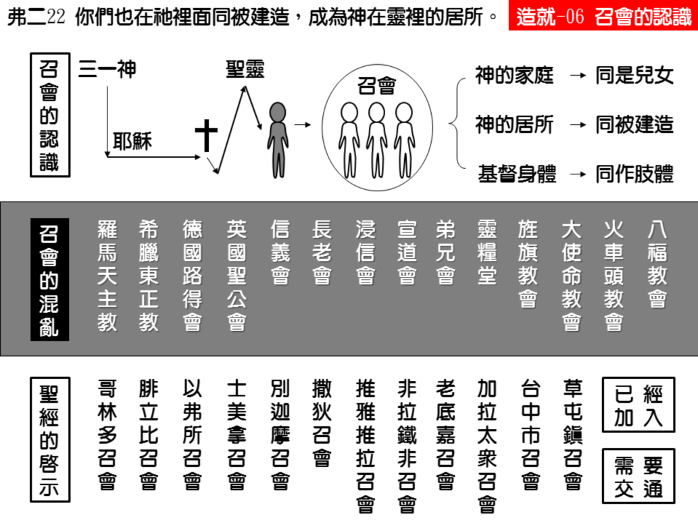

诗歌：598 首、603 首
重要经文：
以弗所书二章十九节：你们不再是外人和寄居的，乃是圣徒同国之民，是神家里的亲人。
哥林多前书十二章十二节：就如身体是一个，却有许多肢体，而且身体上一切的肢体虽多，仍是一个身体，基督也是这样。
哥林多前书十二章二十七节：你们就是基督的身体，并且各自作肢体。
纲目要点：
壹 必须加入召会：
一 我们还没有看见一个隐士式的基督徒是能够长进的。
二 所有得救的人，都是神的居所，也是神的家。
三 基督徒是互相为肢体，而作基督的身体。
贰 要加入哪一个召会：
一 召会有许多的不同。
二 召会有这么多不同的原因：
1 地方的不同。
2 时候的不同。
3 人事的不同。
4 真理注重的不同。
叁 召会只该有地方的不同：
一 比地方小的不是召会。
二 召会的范围不能比地方大。
三 召会只有当地地方的名字。
肆 圣经里，从来没有说加入召会的话：
一 召会是不必加入，也不能加入。
二 要到召会里去寻找交通。
信息选读：
我们必须加入召会
我们必须看见人得救的时候，有个人的一方面，也有团体的一方面。从你个人一方面说，你能接受主的生命到你里面来，你个人能与主有交通，你个人也能祷告。你一个人关在房间里，凭着你个人来说，你能够信主。但是，你如果只知道你个人，你总不成一个样子，并且也不会耐久，也不会太长进。
从前没有，现在也没有一个隐士基督徒是能够长进的
两千年来基督教的历史，有许多人以为说，他能够单独的作一个信徒，作一个隐士，关在山上，什么都不管，只要和主交通。请你们记得，这样的人，属灵的造就都浅薄得很，都经不起任何的试探。当环境好的时候，他们也许能勉强维持；当环境不好的时候，他们就不能维持。你要看见，作基督徒还有第二方面，就是团体的方面。凭着圣经中团体的方面来看，你不能单独的作基督徒。第一，在神的话语告诉我们，一个人一得救，就变作神家里的人，就变作神的儿女，神的孩子。这是圣经里的启示。一个人一重生，就生在神的家里，与许多人一同作儿女，作孩子。圣经里还给我们看见，所有得救的人，都是神的居所，也是神的家。不过这一个家和前面那一个家不一样，那一个家是家庭的家，这一个家是住家，是房子的家。所有的基督徒是合起来作基督的身体互相为肢体，而作基督的身体。
在神的家里是与许多人一同作神的儿女
一个人信主之后，他不只得着个人的生命而已，他所得着的那一个生命，是和许多的人有关系的。以神的家来看，以神的居所来看，以基督的身体来看，我们都不过是全部的一部分。你如果盼望单独地、一部分的存在，这是不可能的事，你定规在神面前失去那一个丰满，那一个丰富。你也许能够作一部分，但是因为你和别人不能联在一起的缘故，你不过是像一块布的零头，像一件东西的零件，你不能发出那一个最高的，丰富的生命之光来。
与弟兄姊妹合起来作神的居所
圣经还给我们看见，召会是神的居所，这是在以弗所第二章，这也是全部新约的大启示之一。你们要知道，神在地上有居所，神需要居所。在圣经里，从摩西支搭会幕起，到所罗门建造圣殿，以至后来修理复兴，这个居所的思想是一直下来的。到了召会起头的时候，神就把人拿来作祂的殿。神曾住在大的房子里，就是所罗门的殿里；但今天神是住在召会里，召会也是神的居所。我们这些人，是合在一起作神的居所。我们这么多神的儿女，是借着圣灵合起来，成功作神的居所。今天你真像汽车上的一块零件一样，当你与别的零件配搭起来的时候，这许多零件就合成功一部汽车，就能开动。我们不敢说，作活石的人，单独站住的时候，就成为死石了。但是一块活石如果不和别的活石合在一起，成为一个神的居所，这一块活石定规要失去它的用处，没有属灵的丰富。我们是神的家，你如果一单独，你就失去丰富。
与众肢体合起来成为基督的身体
今天你是身体上的一只眼睛，一只手，一只脚。一只眼睛放在头上才有用处，如果放在玻璃瓶里，就没有用处。一条腿放在身体上才有用处，如果挂在楼上，就没有用处。请你们记得，身体是这样的，肢体是这样的，谁也不能与别的肢体离开，这是顶厉害的关系。神的家，要勉强分开还可以说；神的居所，要勉强分开也还可以说；但是基督的身体要分开，乃是不可能的事。你的耳朵不能生气要独立，你的手也不能生气要独立，脚也不能站起来说，我要独立。你所得着的生命，也不许可你单独。
我们应当加入的召会，已经有的指引之路
到底我们有没有路呢？有！在圣经里，关于召会，是最简单的，一点也不乱，清楚得很。在罗马的召会，在耶路撒冷的召会，在哥林多的召会，在腓立比的召会，在以弗所的召会，在歌罗西的召会等等。有这么多个不同的召会。在使徒行传里有在安提阿的召会。在启示录一章里有七个召会。
一 比地方小的不是召会：召会最大，是以地方为限度；召会最小，也是以地方为单位。比地方小的，没有召会；比地方大的，也没有召会。
二 召会的范围不能比地方大：在加拉太的众召会，在亚西亚的众召会，在犹太地的众召会。犹太地有许多召会，所以说，在犹太地的众召会，这是在使徒行传里。在加拉太的众召会，是在加拉太书里。在亚西亚的众召会，是在启示录里。在加拉太有好几个召会，所以召会这一个字，就是复数的，不是单数的。
三 召会只有当地地方的名字：召会没有人的名字，没有道理的名字，没有制度的名字，也没有地方来源的名字。乃是当地的地方名字。
怎样加入召会
圣经里，从来没有说加入召会的话。但因为没有法子，人的字眼还需要用它。如果不说加入召会，没有更好的说法，所以就说加入召会。
一 召会是不必加入，也不能加入：我们要看见，在圣经里从来没有一个地方，从来没有一次，告诉我们说，我们要“加入召会。”
二 要到召会里去寻找交通：那么为什么我们要劝你加入召会呢？这不过是姑且用你所懂得的字眼来说。不过因为你是在人的中间，有人不认识你。相信是在你里面的事，他们无法知道。为着这一个，你要去寻求交通。对他们说，我也是 一个基督徒了。那么召会的弟兄看看你实在是他们中间的人，就和你有交通。这就叫作加入召会。你们已经是在基督里的人，要学习寻求神儿女的交通，肢体的交通，身体的交通，要在召会里好好的事奉神。如果你能够看见这一个光，感谢神，你又多走了一步。（摘自初信造就第六篇）
课程复习：
一 为什么说还没有看见一个隐士式的基督徒是能够长进的人？
二 我当如何与众肢体合起来成为基督的身体？
三 请说明在圣经里面，对于我们应当加入的召会，已经有的指引之路。
四 为什么说召会只该有地方的不同，请说出三个理由?
五 为什么说召会是不必加入，也不能加入的？
